Create graphics for the Super Nintendo
From the first pixel
to an animated scene.
The SNES Graph manual: learn the tools, understand the settings, and find every command. The same football player guides you from drawing to home and away kits, named Domicile and Extérieur in the example project.
The example’s resource and color names remain as saved in the project: Joueur means player, Terrain means field, Domicile means home and Extérieur means away. Changing the interface language does not rename your resources.
This guide describes the application as currently implemented. The illustrations show real SNES Graph windows; explanatory diagrams are identified as such. Advanced settings and approximate rendering features are flagged where you use them.
01 · Getting started
Choose the desktop version for native file dialogs and compiler tools. The web version already supports editing and file exports.
Launch the application
On Linux, after building or using the binary already available in this project:
cd "/home/david/Développements/snes-graph"
./src-tauri/target/release/snes-graphTo open the example directly from a terminal:
./src-tauri/target/release/snes-graph examples/football.snesgraph
The folder src-tauri/target/release/bundle contains RPM
and AppImage packages built on Linux. For an AppImage, make the file
executable in its properties, then open it. An installed package may
provide an application menu entry and an association for
.snesgraph files; these installation paths have not been
validated by the screenshots in this manual.
On Windows, the intended package is an NSIS installer. Its build configuration is included, but no Windows user journey has been verified here. To build from source, follow the prerequisites and commands in the project README.
For the web version from source, with Node.js 24 and npm:
npm ci
npm run devThen open the local application on port 1420. Keep the server running. The HTML manual itself does not need a server.
| Task | Desktop application | Web version |
|---|---|---|
| Create, draw, assemble, animate | Yes, in all six workspaces. | The same workspaces. |
| Open a project or image | Native file selection dialog. | Browser file picker. |
| Save a project | Writes to the chosen path; subsequent saves reuse that path. | Downloads a file. Does not directly overwrite the original file you opened. |
| Automatic recovery | In the application's local data directory. | In browser storage, for this origin and profile. |
| Export assets | Saves a ZIP archive. | Downloads a ZIP archive. |
| Generate a ROM | Runs ca65 and ld65 if available. | Exports ca65 sources to compile separately. |
| Open in emulator | Yes, after configuring its executable path. | Cannot launch local programs. |
First steps
- Select EN at the top right.
- Click Open football example at the bottom of the left library.
- In Graphics, select Joueur. You will see its pixels and palette.
- In Sprites, enable Compare : the variants appear side by side.
- In Scenes, select Match and start Play.
- Use Save as (the ⋯button) to make your own copy before editing the example.
An example is a complete project. Opening it replaces the current project, with a save prompt if necessary. It does not add resources to another project.
02 · Finding your way around
The interface uses a consistent layout: project commands at the top, resources on the left, the workspace in the center, and properties on the right.
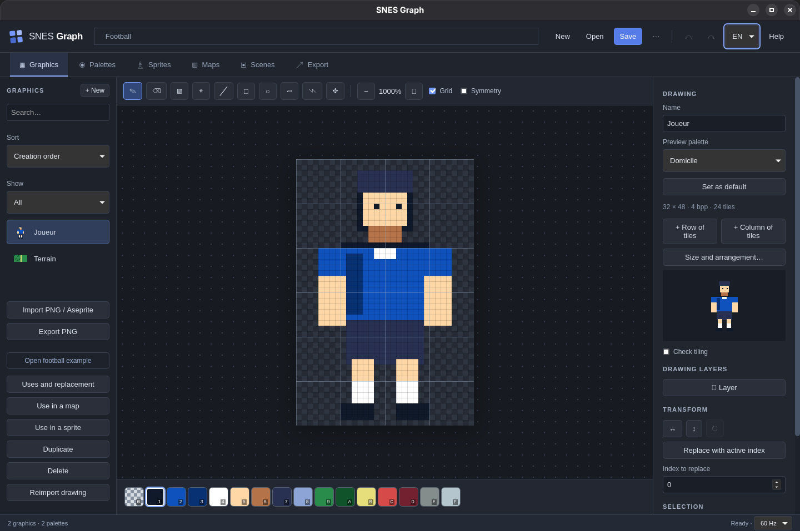
| Area | What it does | Keep in mind |
|---|---|---|
| Top bar | New, Open, Save, Save as, Undo, Redo, language, and help. | A dot after the project name indicates unsaved changes. |
| Workspace tabs | Graphics, Palettes, Sprites, Maps, Scenes, Export. | Switching workspaces does not create or save a project. Some view settings reset when you leave a workspace. |
| Left library | Search, select, and create resources of the current type. | Search filters the list, not the entire project. The + button creates a resource in the active workspace. |
| Actions below the library | Football example, uses, duplication, deletion; PNG import and export in Graphics. | Commands act on the selected resource. Export uses checkboxes in the center instead of this library. |
| Center toolbar | Drawing tools, zoom, playback, and preview options, depending on the workspace. | Hover over a standalone icon to identify it. |
| Work area | Edit pixels, move pieces, paint the map, or view the scene. | The checkerboard indicates transparency. Grids and zoom are editing aids. |
| Right inspector | Edit properties of the current selection. | Scroll this panel independently of the center. Important commands appear farther down. Triangles expand or collapse groups. |
| Status bar | Result or error message, save status, and 50/60 Hz setting. | The × beside a message dismisses it; it does not fix the cause. |
All global commands
| Command | Effect |
|---|---|
|
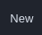 New |
Creates an empty project with one drawing and one palette; returns to Graphics. |
|
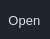 Open |
Loads a .snesgraphfile. For PNG or Aseprite, use
Import in Graphics.
|
| Save | Saves every resource and setting in the project. |
|
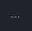 ⋯ · Save as |
Chooses a new destination; useful for working on a copy. |
|
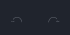 ↶ / ↷ |
Undoes or redoes a change. Buttons are disabled when no corresponding history state is available. |
|
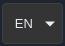 FR / EN |
Changes interface labels. Resource names you assign are not translated. |
|
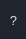 ? |
Opens the short help panel and the Project namefield. This is where you rename the project. |
|
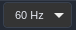 50 Hz / 60 Hz |
Opens the duration conversion choices; see Frame rate and time. |
Numeric fields apply changes immediately. Use the field's small arrows or type a value. Values are clamped to the accepted range. To reverse a change that has already been applied, use Undo; simply switching tabs does not revert it.
03 · Understanding resources
A pixel does not store a color directly: it stores an index. The chosen palette gives that index its color.
| Resource | Contains | Football example |
|---|---|---|
| Drawing / tileset | An indexed pixel surface, optionally split into drawing layers. Its tiles are 8 × 8 pixel blocks. | Joueur: 32 × 48 pixels, or 24 tiles. Terrain: 16 × 8 pixels, or 2 tiles. |
| Palette | 4, 16, or 256 entries with colors, names, locks, and an optional cycle. | Domicile and Extérieur, each with 16 entries. |
| Character / metasprite | Pieces taken from drawings, multiple poses, animations, and variants. | Joueur, assembled from six 16 × 16 pieces. |
| Map / tilemap | A grid referencing a drawing's tiles, with a palette and attributes per cell. | Terrain: 32 × 32 cells, with a line down the middle. |
| Scene | Map layers, character instances, and video settings. | Match: a pitch and two instances of the same Joueur character. |
| Export set | A resource selection, a reference scene, and optimization options. | An export of the match with both palettes. |
Indices, colors, and transparency
In a 4 bpp drawing, each pixel has a value from 0 to 15. If the shirt uses index 2, entry 2 in Domicile can be blue and entry 2 in Extérieur white: the pixels remain identical. Keep the same meaning for corresponding indices across a palette family.
An SNES sprite palette has 16 entries: transparent index 0 and 15 visible colors. A project can contain many named palettes; that does not mean they can all be displayed simultaneously in the console's color memory. Check these constraints at scene level.
| Depth | Available indices | Palette entries | Bytes per 8 × 8 tile | Use in the editor |
|---|---|---|---|---|
| 2 bpp | 0–3 | 4 | 16 | Backgrounds compatible with the selected mode. |
| 4 bpp | 0–15 | 16 | 32 | Character pieces and many backgrounds. |
| 8 bpp | 0–255 | 256 | 64 | Backgrounds in compatible modes; Mode 7 uses a specific export layout. |
04 · Projects and saving
Save a self-contained project
A .snesgraph file contains pixels, palettes, layers,
characters, maps, scenes, and export sets. Original imported images
are not needed to reopen the project. Keep them anyway if you want to
edit them in another program and reimport them.
- Open ? and fill in Project name.
- Click Save. On the first desktop save, choose a folder and filename.
- Look for the Project saved message and check that the dot after the name has disappeared.
- For a working variation or an important milestone, use ⋯ and a new file.
Renaming the project does not rename an open file. Use Save as to change the filename too. In the browser, every save downloads a file: check your downloads folder. Ctrl + Shift + S opens Save as. Let a save already in progress finish before starting another. If you edit or undo while saving, the dot remains whenever the current state differs from the saved state.
Undo, redo, and closing
Ctrl + Z undoes; Ctrl + Shift + Z or Ctrl + Y redoes. A drawing stroke or completed move counts as one change. Making a new change after undoing clears the redo history.
History keeps up to 50 changes, with an estimated memory limit that can reduce this number for large projects. It resets when you open or replace the project and is not stored in the file.
| Choice | Result |
|---|---|
| Cancel or × | Stays in the current project. |
| Save | Saves, then continues opening or closing if the save succeeds. |
| Discard | Replaces or closes the project without saving the current changes. |
Automatic recovery
After a change, a recovery copy is scheduled after roughly 1.5 seconds without further changes. At startup, a banner may offer Recover or Dismiss. Recover loads the copy as a project that needs saving; choose a destination afterwards. Even if you edit and then undo back to the recovered copy, it still needs saving.
Recovery is neither a dated backup nor a history of all your projects. It stores the latest recoverable state. Dismiss hides the banner ; it does not mean the copy is deleted. Save your working files regularly.
50 Hz, 60 Hz, and animation durations
Pose, cycle, and animated-tile durations are set in
console frames. Time in seconds is
frame count ÷ frame rate. Layer and character movement
speeds are already expressed per second.
| Dialog choice | New duration | Elapsed time |
|---|---|---|
| Keep frame counts | 12 frames | 0.24 s instead of 0.20 s: a slower animation. |
| Convert durations | 10 frames | Keeps 0.20 s; other values are rounded to the nearest frame, with a minimum of 1. |
This affects the entire project and can be undone. The ROM duration entered in Export is a separate generation setting: check it after changing the frame rate.
05 · Creating and managing resources
Select the workspace, click + beside the library heading, fill in the dialog, then click Create. Names can contain spaces and accented characters; resource links do not depend on their names.
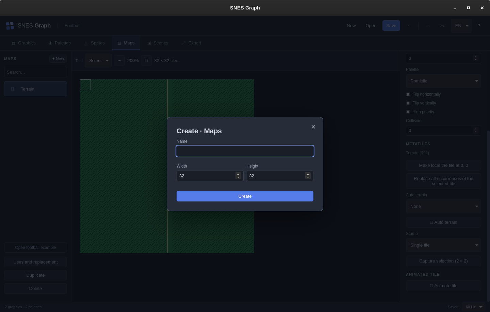
| Workspace | Fields | Result and useful values |
|---|---|---|
| Graphics | Name, width, height, depth 2/4/8 bpp. | Initial dimensions range from 8 to 512 pixels per axis, rounded up to a multiple of 8. A palette of the exact size is reused or created. |
| Palettes | Name, entry count 4/16/256. | Choose 16 for a character. There is no size conversion command for an existing palette. |
| Sprites | Name. | A new character with an initial pose and animation. Add pieces from a 4 bpp drawing. |
| Maps | Name, width, height. | 1 to 128 cells per axis at creation. The first drawing becomes the initial tileset; change it in the inspector. |
| Scenes | Name. | A scene with no layers or characters, initially Mode 1 and 224 lines. Add content in the inspector. |
| Interface reference | When and how to use it |
|---|---|
|
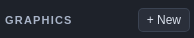 + New |
Creates a resource in the current workspace. In Graphics, enter its name, pixel dimensions, and depth. To add tiles to an existing drawing, use its inspector buttons instead. |
|
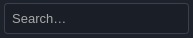 Search… |
Filters the workspace resource list by name. Clear the search if a resource seems missing; filtering does not delete it. |
|
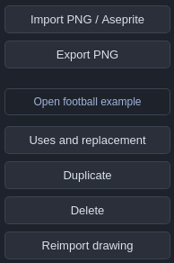 Actions on the selected drawing |
Import PNG / Aseprite adds resources from a file; Export PNG produces an image of the selected drawing. Reimport drawing replaces its pixels from a compatible PNG. Uses and replacement finds references, Duplicate creates a copy, and Delete removes an unused resource. Open football example replaces the current project after handling unsaved changes. |
| Interface reference | Usage |
|---|---|
| Name |
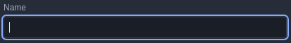 Identifies the new drawing in the library. Use a name such as “Ball” to distinguish it from the player and pitch. |
| Width / Height |
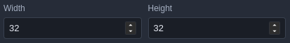 Pixel dimensions, from 8 to 512 at creation, in multiples of 8. A 32 × 32 drawing contains 4 × 4 tiles, or 16 tiles. In the creation dialog for a map, dimensions are in cells, not pixels. |
| Depth |
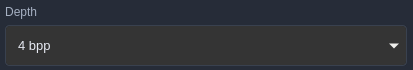 2 bpp: 4 indices; 4 bpp: 16 indices; 8 bpp: 256 indices. Choose 4 bpp for character pieces in this editor. Depth determines how many indices the pixels can use. |
| Create |
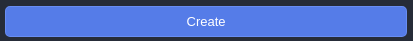 Adds an empty drawing and selects it. Closing with × leaves the dialog without creating a resource. You can then enlarge the drawing with + Row of tiles and + Column of tiles. |
Direct workflows and resource management
Use Sort to choose creation order or name, and Show to filter used or unused resources. Search still filters their names. The buttons in Uses and replacement open the referencing resource. Duplicating a resource keeps its external references shared.
In a map, Create tile adds a row to its source drawing and opens its first new tile. Draw your motif, then choose Back to map: the new tile is selected as the brush, while the map selection, zoom and scroll position are retained. No map cell is painted automatically. Edit source drawing opens the brush tile, or the selected cell when the Select tool is active. Editing this shared source changes every use.
From a drawing, Use in a map opens a compatible map or creates one. Use in a sprite (4 bpp only) lets you choose an actor and pose; it inserts an 8 × 8 piece from the top-left corner. You can change its size and source in the sprite inspector.
The selected stamp can be renamed, duplicated or deleted without erasing painted cells. Expand a terrain’s connection rules to rename or duplicate it. Before deleting it, choose another terrain or keep the painted tiles without their terrain association. Replacement recalculates connections. Animated tiles have optional names; deletion keeps the base tile. To duplicate an animation, first choose an unanimated base tile as the brush.
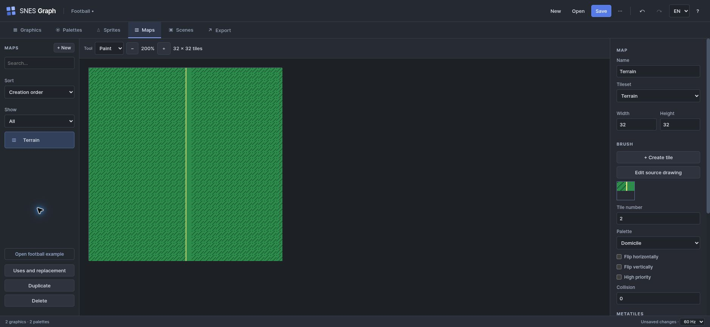
Duplicate while keeping track of references
Duplicate copies the selected resource but preserves its references to other resources. A duplicated character still uses the same drawings and palettes. A duplicated map still uses the same tileset. For truly independent pixels, duplicate the drawing too and assign that copy.
A duplicated palette, however, has its own colors. For a new kit, duplicate the palette and create a character variant: there is no need to duplicate pixels.
Uses, replacement, and deletion
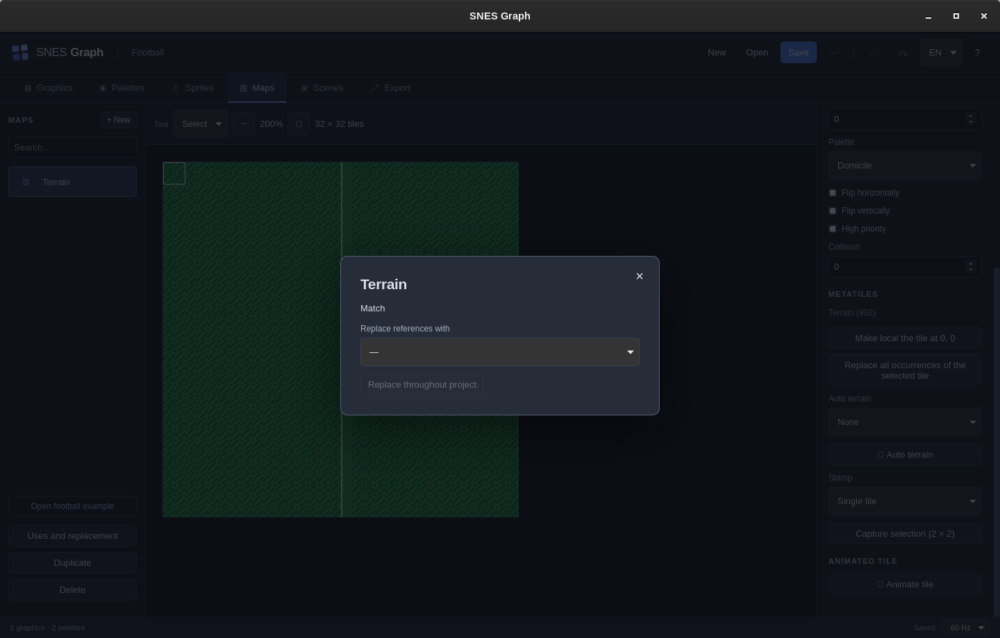
- Select the resource, then Uses and replacement.
- Read the names of resources that depend on it.
- If needed, select a resource of the same type in Replace references with.
- Click Replace throughout project. Compatible references are updated; the original resource remains.
- Then delete the old resource if it is no longer used.
Deleting a resource used elsewhere is refused. The project keeps at least one drawing and one palette. An incompatible replacement may be refused after validating the project. Replacing a character in scenes resets instances to the new character's first animation and Original variant: check their appearance again.
Project-wide scope. Replacing references affects the entire project. For a change limited to one piece or cell, edit its local property in Sprites or Maps. Deletion takes effect immediately when allowed; undo can restore it while the history remains available.
06 · Drawing and transforming
The Graphics workspace edits pixels shared by character pieces and maps. First choose the drawing, then a color index below the canvas.
The ten tools, from left to right
Each thumbnail below is a screenshot of the actual button. Click to enlarge it, then close with Escape. In the application, hovering shows the tool name. A blue background indicates the active tool; a dimmed button may be unavailable in the current context.
| Tool | Gesture | Result |
|---|---|---|
| Pencil | Click or draw while holding the left mouse button. |
Applies the active index and connects positions along the
stroke.
Example: add a light pixel to the shirt using index 4. That pixel keeps the same index in every variant. |
| Eraser | Click or draw. |
Writes transparent index 0 to the drawing or active layer.
On an upper layer, erasing reveals visible layers underneath; it does not paint black. |
|
|
Click inside an area. |
Replaces the connected area of the same index with the active
index; a selection limits the result.
Close an area's outline to recolor only its interior. Fill follows connected pixels with the same index, not all visually similar colors. |
|
|
Click a pixel. |
Samples its index from the flattened drawing without changing
palette colors.
Click the grass to find its index, then switch back to Pencil: the picker selects a color; it does not draw. |
|
|
Drag from start to end, then release. |
Draws a one-pixel-wide line.
Useful for a white pitch marking. Choose the line index before dragging. |
|
|
Drag between two corners. |
Draws the outline. Fill the interior afterwards if needed.
For a solid rectangle, draw the outline and then use Fill inside it. |
|
|
Drag to define its bounding box. |
Draws an ellipse outline.
The drag width and height determine its shape: equal width and height make a circle. |
|
|
Drag between two corners. |
Defines a rectangular working area, replacing the previous
selection.
Select an 8 × 8 pixel square to work on one tile. Until you Deselect, drawing tools remain limited to the selection. |
|
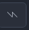 Lasso |
Draw a closed outline while holding the mouse button. |
Defines a freehand selection mask and its bounding box.
Useful for copying an irregular detail. Mirror and rotation transformations still use the bounding rectangle. |
|
|
After making a selection, drag in the canvas. |
Moves selected pixels, replaces their original positions with
transparency, and deselects when finished.
Make a selection first, then choose Move and drag. Use Copy / Paste if you want to leave a copy at the original location too. |
Pixels moved beyond the drawing are lost from the result; use Undo to restore them. A stroke is committed only when the pointer is released. No B/E/G shortcuts are documented for selecting tools: use the toolbar.
Zoom, grid, symmetry, and preview
| Command | How it works |
|---|---|
|
|
Zoom in whole-number multiples, from 100% up to 3200%
depending on drawing size; a canvas limit may lower the
maximum. Does not change file dimensions.
1000% means one drawing pixel occupies 10 × 10 screen pixels. It adds no tiles. |
|
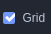 Grid |
Shows pixels and emphasizes 8 × 8 tile boundaries. Not
exported.
The stronger lines every 8 pixels help identify tile boundaries. |
|
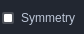 Symmetry |
Mirrors pencil, eraser, and shape marks across the drawing's
vertical axis. This is neither rotation nor a general symmetry
setting for Fill.
Pencil and shapes mirror marks around the vertical axis of the entire drawing. Useful for a face; it does not apply to every operation, such as Fill. |
|
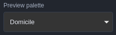 Preview palette |
Recolors the preview using a palette with enough entries. Does
not replace palettes assigned to existing pieces and cells.
Choose Extérieur to try the away kit. To apply that kit to a player in the scene, use its Variant. |
|
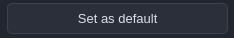 Set as default |
Saves this as the drawing's palette. Palette references
already assigned to pieces and maps remain separate.
Use this when the palette should become the drawing's default. This is not a project-wide palette replacement command. |
|
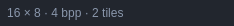 Preview and dimensions |
Shows the drawing, width, height, depth, and tile count.
16 × 8 means two tiles; 4 bpp allows indices 0 to 15. The small preview below the buttons shows the image without the editing grid. |
|
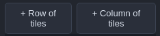 + Row of tiles / + Column of tiles |
Adds 8 pixels at the bottom or right, up to 4096 pixels per
dimension. New tiles are transparent. Pixels and all layers
are preserved, as are patterns used in maps, metatiles,
terrains, animations, and sprites. Adding a column may change
tile numbers: project references are updated automatically.
Undo restores the previous size.
On Terrain, + Row adds two new transparent tiles. + Column adds one tile per existing row. Then draw in these empty cells. |
|
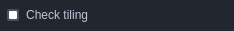 Check tiling |
Repeats the drawing in a 3 × 3 grid in the inspector to help
spot edge discontinuities.
The entire drawing repeats. For the 16 × 8 Terrain drawing, the two-tile block repeats, not just the selected tile. |
|
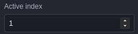 Active index |
Selects the same color numerically as the palette strip. The
strip uses hexadecimal: A to F correspond to 10 to 15.
This is the destination color for Pencil and replacement. On Terrain, 9 is grass; its name and color come from the preview palette. |
| Interface reference | When and how to use it |
|---|---|
|
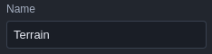 Drawing name |
Renames the selected resource. “Terrain” is a drawing name, separate from the map that reuses it. Renaming it changes neither its size nor its pixels. |
| Index strip |
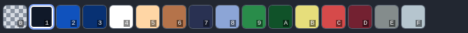 Click a swatch to choose the active index. Its outline shows the selection; 0 erases to transparency. Letters A to F represent indices 10 to 15. The strip shows colors from the chosen preview palette. To draw a line on the football pitch, choose B (index 11, named Ligne), then the Line tool. Edit this entry's RGB value in Palettes. |
Drawing size and tile arrangement
Open Size and arrangement… in the drawing inspector. Resize uses dimensions in tiles and one of nine anchors. Pixel dimensions and the preview are shown before applying. The + Row and + Column buttons remain available for adding space at the bottom or right.
To crop, select a region before opening the dialog; its edges extend to tile boundaries. Insert/remove row or column uses a zero-based index. To move a block, select it and choose Move / exchange: destination tiles are exchanged without overwriting. Blocks must not overlap.
Maps, stamps, terrains, animations and piece sources are remapped; all layers are retained. If a sprite piece would be fragmented, edit its source in the assembly before trying again. For a removed tile that is still used, enter a replacement index in the new drawing. This redirects references, not the removed pixels.
Reduction requires accepting pixel deletion. Apply remains disabled while any conflict remains. Cancel closes the dialog without changes; Ctrl+Z undoes an applied transformation in one step.
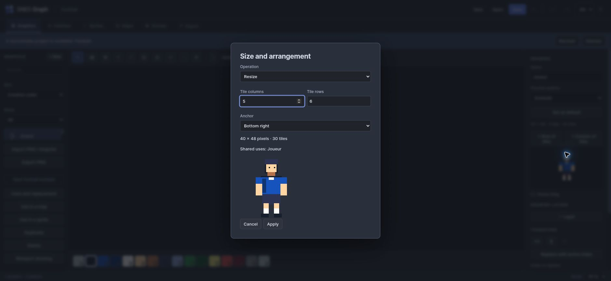
Drawing layers
| Interface reference | When and how to use it |
|---|---|
|
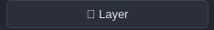 + Layer |
On a drawing without layers, this button creates Base from existing pixels, then a new transparent layer. Draw pitch markings on this new layer so you can hide them separately. |
|
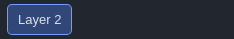 Active layer |
Click its name button. A blue background indicates where subsequent strokes will be written. This selection is independent of the Visible and Lock checkboxes. |
+ Layer adds a transparent layer above the others. On the first addition, existing pixels become a Base layer. Click a layer name to make it active.
| Control | Usage |
|---|---|
|
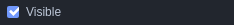 Visible |
Includes or excludes the layer from the flattened image, and
therefore from previews and exports using this drawing.
Example: temporarily hide the markings to view only the grass. |
|
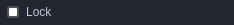 Lock |
Protects layer pixels from drawing operations. A hidden layer
can still be active: check both settings if a stroke does not
appear.
Lock Base before working on a detail layer; make sure to select the detail layer before drawing. |
|
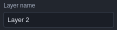 Layer name |
Renames the active layer.
A name such as “Markings” helps identify the layer containing pitch lines. |
|
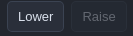 Lower / Raise |
Changes stacking order. Layers run from back to front; index 0
reveals what is underneath.
Raise is disabled when the layer is already above all others. |
|
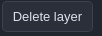 Delete layer |
Removes the active layer unless it is locked or the only
remaining layer.
Deletion removes the active layer and its pixels; Undo restores it. |
|
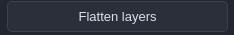 Flatten layers |
Keeps only the composite image of visible layers and removes
the layer structure. Required before PNG reimport.
Hidden layers are not retained in the result. Save a project copy if you want to keep their organization for another version. |
These are artistic layers. They do not automatically become BG1/BG2 or multiple hardware sprites. Export uses their flattened image.
Transformations and selection
| Interface reference | When and how to use it |
|---|---|
|
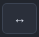 Horizontal flip ↔ |
Swaps left and right within the rectangular selection, or the entire drawing if nothing is selected. Useful for reorienting a detail. This changes pixels; flipping a piece in Sprites preserves its source drawing. |
|
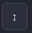 Vertical flip ↕ |
Swaps top and bottom over the same area. Select a tile first if you do not want to flip the whole sheet. |
|
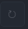 Quarter turn ↻ |
Rotates a square area. The screenshot shows the button disabled on the 16 × 8 Terrain drawing without a selection: select an 8 × 8 tile to rotate it. |
|
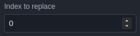 Index to replace |
Choose the source index to find. For example: 9 for the football grass. This value is independent of the active index, which is the destination. |
|
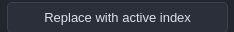 Replace with active index |
After choosing the source index and destination color, click once. For example: source 9 and active index 10 replace all light grass with dark grass in the active layer or drawing. The selection does not limit this command. Palette colors are unchanged; Undo reverses the replacement. |
|
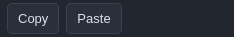 Copy / Paste |
Select the detail and click Copy. Then define its destination with a selection and click Paste. Without a destination selection, pasting starts at the top left. Pixels beyond the drawing are clipped. |
|
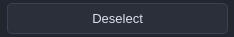 Deselect |
Removes the selection boundaries and lasso mask. Use it if Pencil seems unable to draw outside an old rectangle. |
The buttons ↔, ↕ and ↻ apply horizontal flip, vertical flip, and a quarter turn respectively. They act on the selected rectangle, or the whole drawing/active layer without a selection. Rotation is available only for a square area.
With a lasso, transformations use its rectangular bounding box. The freehand mask is used for drawing, moving, and copying; do not assume rotation or index replacement respects that mask.
Copy stores the selection's indices, or those of the whole active layer if nothing is selected. Paste places them at the top-left corner of the current selection, or at the origin (0,0). This clipboard belongs to this workspace; it does not copy an image to an external program and is not retained when you leave this drawing. Use PNG export for that.
Deselect clears the rectangle and mask. Under Selection, the listed uses refer to the tile at the selection's top-left corner, not necessarily every covered tile.
Index to replace sets the source value; then choose a destination color in the strip and click Replace with active index. The operation affects the entire active layer or drawing, regardless of the selection. It changes indices, not palette colors.
Exercise: a shared touch-up. In Joueur, select index 4 and add a detail to the shirt. Open Sprites, then Compare: the detail appears in every variant using its own color at index 4. Undo the stroke to restore the example.
07 · Named palettes
A palette is a resource you can name, reuse, duplicate, and animate. Its name helps you find it; the meaning of each index keeps variants consistent.
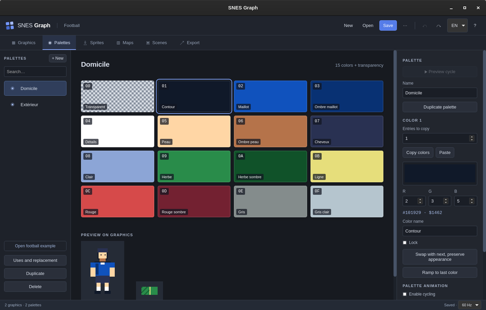
Name and edit colors
| Interface reference | When and how to use it |
|---|---|
|
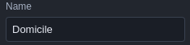 Palette name |
Give it a meaningful name: Domicile, Extérieur, or Gardien. This identifies the entire palette in drawing, piece, map, and variant lists; it does not replace the meaning assigned to each entry. |
 A palette entry A palette entry
|
The number at the top left is the hexadecimal index; the name below indicates its role. In the screenshot, 02 is index 2, named Maillot. Click the entry so the inspector shows Color 2. Pixels store only this number. Editing its color recolors every pixel using that index with this palette. |
 Entry 00 Entry 00
|
The first entry represents drawing transparency. The checkerboard identifies it and is not part of exported pixels. A 4 bpp palette therefore shows 15 visible colors and this transparent entry. |
|
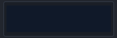 Color picker |
Click the large color rectangle to open the picker. The chosen color is rounded to an SNES color. A locked entry's color cannot be changed. |
|
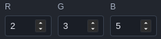 R, G, B |
Each of these fields uses 0 to 31, not 0 to 255: R = red, G = green, B = blue. For saturated red, use 31, 0, 0. The screenshot shows the outline color, 2, 3, 5. |
|
|
The first code is the screen representation; the second is the SNES RGB555 word. Both are calculated readouts, not input fields. |
|
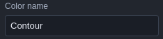 Color name |
Describes an index's role, such as Contour (outline) or Maillot (shirt). Keep the same roles at the same indices in Domicile and Extérieur so the variant works without redrawing the player. |
| Preview on graphics |
Shows every drawing compatible with the selected palette. Seeing a recolored player here does not mean its pieces or instances now use that palette. To change a kit in Match, choose a player variant. |
- Choose a palette on the left and edit its Name in the inspector.
- Click an entry in the grid.
- Use the color picker or the R, G, B fields to define an SNES-compatible color.
- Give it a useful Color name : Maillot, Ombre maillot, Peau… (shirt, shirt shadow, skin).
- Observe Preview on graphics. It applies the selected palette to drawings of compatible depth, even if they normally use another palette.
The code #RRGGBB shows a screen representation, and the
value $xxxx the SNES color word. These are readouts;
there is no hexadecimal input field. The selected screen color is
rounded to 5-bit components. Entry 0 remains transparent in drawings:
selecting it shows an explanation instead of color editing tools.
Reordering is not recoloring. Appearance-preserving swaps propagate to the palette family linked through variants and to affected drawings. A swap is refused if a linked entry is locked or a drawing also uses an unrelated palette family, including its default palette and stamp palettes. Swaps exceeding the indices allowed by the drawing's depth are also refused. Duplicate and reassign the drawing to isolate this work. After reordering, check cycle ranges again: their endpoints remain indices.
Compare palettes and remap pixels
Expand Compare and remap in Palettes. Choose another palette of the same size and a preview resource. Both previews share the same playback time; for a sprite, also select its animation. The table highlights differing colours. On a sprite, comparison only substitutes the selected palette, preserving other piece palettes.
For a drawing, Remap indices… opens source → destination mappings. Zero stays transparent and visible indices stay nonzero. Preview the result before choosing Apply to shared pixels. All layers and uses of that drawing are affected; palette colours remain unchanged. A locked index in a used palette blocks its remapping. Cancel discards the mapping; Ctrl+Z undoes an applied remap.
In Maps, select a region then choose Apply palette to selection. In Sprites, Shift+click selects multiple pieces and Selected pieces palette changes them together. A variant can be duplicated without copying drawings. In Scenes, check multiple instances then choose Selection variant; all must use the same actor.
Palette cycles
Check Enable cycling, then choose First index, Last index and Duration in frames. This duration is the interval between color shifts. Index 0 is excluded.
Preview cycle starts or stops cycling in the previews. A range of 9–11 contains three colors: at 8 frames per step, a full cycle lasts 24 frames, or 0.4 seconds at 60 Hz. Pixels remain the same; their colors move. Editing locks do not remove an entry from a cycle.
Cycles appear in animated character and scene previews and are taken into account during palette allocation. The ordinary drawing preview remains a static editing view. An animated palette may prevent slot sharing that appeared compatible in the initial frame.
08 · Kits and variants
For two teams wearing the same equipment in different colors, create two palettes and two variants of one character.
| Index | Role | Domicile | Extérieur |
|---|---|---|---|
| 0 | Transparency | Transparent | Transparent |
| 2 | Shirt | Blue | Off-white |
| 3 | Shirt shadow | Dark blue | Light blue-gray |
| 4 | Details and socks | White | Red |
| 5, 6, 7 | Skin, skin shadow, hair | Same roles and colors in both palettes. | |
Create a new kit, step by step

- In Palettes, select Domicile and click Duplicate palette.
- Name the copy Gardien, for example. Edit 2, 3, and 4 without moving the other indices.
- In Sprites, select Joueur then + Palette variant.
- In the inspector, enter Variant name : Gardien.
- For each base palette used by the pieces, choose a replacement palette. In the example, assign Domicile → Gardien.
- Select Gardien in the toolbar's Variant list. Enable Compare to check every kit.
- In Scenes, add or duplicate a Joueur instance and assign the Gardien variant to it.
A variant can replace several base palettes if a character uses pieces with different palettes. Missing mappings keep the original palette. Sprite replacement palettes offered in the list have exactly 16 entries.
| Your intention | Operation | What remains shared |
|---|---|---|
| Try an appearance without changing the project | Preview palette in Graphics. | Pixels unchanged; no new variant. |
| Define another reusable kit | Independent palette + character variant. | All drawings, poses, and animations. |
| Show two different players on screen | Two Joueur instances in a scene, each with its own variant. | The character; positions and speeds are independent. |
| Change another character's silhouette | Duplicate the character and required drawings, then reassign its pieces. | Only the resources you choose to keep shared. |
Delete variant is disabled while a scene uses that variant. Reassign its instances to Original or another variant first. Choosing Original in the preview does not delete anything.
09 · Assembling sprites
One visible character may require several hardware sprites, called OBJs. The Sprites workspace assembles these pieces into reusable poses.
Add and select a piece
- Select a pose in the bottom strip and stop playback.
- Click + Add piece. It initially uses the first 4 bpp drawing and an 8 × 8 area.
- Click a piece in the preview to select it and show its properties.
- Choose the source drawing, size, and source coordinates.
- Position the piece with X/Y or by dragging.
Double-clicking a piece opens its drawing. The Back to character button in the Graphics library returns to assembly. Editing the drawing affects every piece using that area, across all relevant poses.
Automatically slice a drawing
Select Drawing to slice, then Slicing. The offered sizes divide the width and height exactly. Each option shows the number of squares that are not entirely transparent and their raw pixel storage cost.
Apply slicing to pose replaces all pieces in the active pose with a regular grid of pieces; entirely transparent squares are skipped. It neither slices every drawing or pose nor searches for an optimal assembly mixing different sizes.
Choose sizes compatible with the scene's global OBJ size pair . In Match, the pair is 16 × 16 / 32 × 32. An 8 × 8 piece would be incompatible. Character count is not OBJ count: two players of six pieces require twelve OBJs.
Collisions and anchors
Expand Collisions and anchors at the bottom of the inspector, with playback stopped. These data belong to the pose.
The editor does not simulate collisions, implement game rules, or provide a graphical box editor here. Coordinates are entered in the pose's coordinate system; the manifest preserves them, and your engine must apply its origin convention.
10 · Poses and animations
A pose describes an assembly. An animation chooses which poses to display and how many console frames each remains on screen.
Pose strip
Click a thumbnail to select a pose and stop playback. The Pose name field renames it. Duplicate pose copies pieces, boxes, and anchors; source drawings remain shared. After Undo, fields edit the pose and animation currently displayed. During playback, pose commands target the pose visible at that instant; stop playback before making precise edits.
Delete pose is disabled if only one pose remains or an animation references it. Replace or remove all its occurrences in sequences first.
Selection and batch editing
In the assembly, Shift+click adds or removes a piece from the selection; dragging a rectangle in the canvas selects intersecting pieces. The last clicked piece is the alignment reference. Dragging a selected piece moves the selection; named groups retain linked movement. Transform selection provides duplication, deletion, alignment, flips and shared priority.
Yellow handles manipulate the origin and anchors. Drag a collision box’s top-left handle to move it, or its bottom-right handle to resize it. The outline lets clicks reach the pieces underneath. Moving the origin changes the rendering relative to the anchor point. To copy a named group’s placement, select destination poses; they must have the same number of pieces in that group. Pieces are matched in their existing order.
Check sequence frames to duplicate, delete or apply a shared duration. At least one frame must remain. Drag a frame card onto another to insert the selected frames before it; poses, durations and events are preserved. The numbered button shows the event and opens the pose. The playhead lets you find a pose at a given time.
Loop a range temporarily restricts playback to the chosen frames; then press Play. This does not change the saved animation. Durations are console frames and the millisecond equivalent depends on the project’s 50/60 Hz setting. Each batch operation is undone in one step.
The playhead follows the displayed pose, including ping-pong playback. Clicking a frame also seeks to its start. Changing the bounds enables the range; adding a frame extends it. Switching animations does not reuse another animation’s range. Without looping, playback stops on its final frame.
Animation sequence
Create a slower walk. In the Marche animation, change both Frames durations from 8 to 12. Start Play: the loop now lasts 24/60 = 0.4 seconds. Both kits retain exactly the same movement.
There is no drag-and-drop step reordering command. To change the order, edit the poses chosen in the blocks, then their durations and events. Events are exported in the manifest; the game interprets them.
11 · Maps, metatiles, and terrain
A map places tile references on a grid. Reusing a tile does not duplicate its pixels: editing the source changes every occurrence.
Paint a map
- Create or select a map. In Tileset, choose its source drawing.
- Choose a tile in the Brushthumbnail, or enter its Tile number.
- Choose its palette, flips, priority, and optionally a collision value.
- In Tool, choose Paint, then click or drag in the map.
- Use Undo to remove the last complete stroke.


Copy, move and rotate a region
Choose Select, draw a rectangle, then expand Copy and transform a region. Copy the region before choosing a transformation and destination X/Y in cells. Preview does not change the project. Apply paste commits the map and any new tiles as one undoable operation.
Flips reverse both layout and cell attributes. Clockwise rotation swaps width and height; it reuses identical tiles, including flipped matches, and creates missing ones. A rotated animation receives a new base tile and rotated frames to avoid accidentally animating an existing tile. The count reports new patterns; the drawing grows by whole rows. With layers, generated pixels go into a Rotation layer.
Paste beyond map bounds is rejected unless enlargement is checked. Move first fills the source region with the current brush cell, then pastes the copy; overlapping destinations are allowed. Palettes, collisions and priorities are preserved. Terrain associations are removed from transformed cells and neighbouring connections are recalculated. Any project change requires recalculating the preview. If the source drawing, its layers or its animations change, copy the region again before pasting.
Terrain rules now show their sixteen tiles in a 4 × 4 grid, ordered by masks 0 to 15.
Stamps and metatiles
Using Select, draw the rectangle to reuse. Click Capture selection in the inspector, then select the new pattern under Stamp. Switch back to Paint and click: the stamp places its cells and attributes starting at the target point.
Parts extending beyond the map are clipped. Choose Single tile again to return to a simple brush. The selected stamp can be renamed, duplicated and deleted without erasing the map.
If you reduce a map’s dimensions, its selection is restricted to the remaining cells. Capturing this selection therefore produces a valid stamp. Changing the tileset is refused if a tile required by the map, a stamp or an animation (source or frame) is missing from the new graphic.
Adding tiles to the field
- Open Graphics → Terrain.
- Below the dimensions, click + Row of tiles to add a row at the bottom, or + Column of tiles to add a column on the right.
- Draw in the new 8 × 8 pixel squares.
- Return to Maps → Terrain, select the new tile in the brush and paint.
The + New button in the library creates a separate graphic; the row and column buttons enlarge the selected graphic. For the original football field (16 × 8), adding a row produces a 16 × 16 graphic, with four tiles in total.
Editing one occurrence or all occurrences
Make local the tile at x, y acts on the cell at the top-left corner of the selection. It copies its pixels into a new row of the tileset and assigns only that cell to the new tile. You can then open the graphic to retouch the copy without changing other occurrences. If the graphic uses layers, its top layer must be visible and unlocked.
Replace all occurrences of the selected tile takes the tile number at the same top-left corner and replaces every cell in the map using that number with the current brush tile and attributes. This action does not replace occurrences throughout the project or rewrite saved stamps.
Automatic terrains: 16 rules
- Choose the starting tile and click + Auto terrain.
- Select this terrain, then open Connection rules.
- Enter the tile numbers to use for the 16 neighboring-cell configurations.
- Paint with this terrain. The editor recalculates connections from neighboring cells of the same terrain.
- Select None to paint cells without a terrain tag again.
The mask is a sum: North = 1, East = 2, South = 4, West = 8. For example, neighbors to the north and east give 3; neighbors on all four sides give 15. Diagonals do not count.
| Mask | Neighbors | Mask | Neighbors |
|---|---|---|---|
| 0 | None | 8 | West |
| 1 | North | 9 | North + West |
| 2 | East | 10 | East + West |
| 3 | North + East | 11 | North + East + West |
| 4 | South | 12 | South + West |
| 5 | North + South | 13 | North + South + West |
| 6 | East + South | 14 | East + South + West |
| 7 | North + East + South | 15 | North + East + South + West |
All 16 rules initially use the active tile: customize them to see actual connections. A terrain does not automatically generate new artwork; draw the different pieces in the tileset. Rename, duplicate and delete controls are in the connection rules.
Animated tiles
Select a tile, then + Animate tile.
Source tile identifies the reference to animate;
Sequence contains successive comma-separated tile
numbers, for example 0,1,2,1.
Frames per step sets their shared duration. The
numbers must exist in the tileset.
The Maps workspace has no Play button: watch this animation by playing a scene that uses the map. Sequences can be named, duplicated onto another base tile and deleted. Undo restores the deleted sequence.
12 · Composing a scene
A scene brings resources together and checks their combination against SNES constraints. It contains instances of the character without copying its graphics.
General settings
| Control | Role |
|---|---|
| Play |
Advances animations, cycles, animated tiles, velocities and
effects. Stop resets preview time to zero.
Animates characters, movement, cycles and effects in the preview. |
| − / + |
Zoom from 100 to 400%.
200% doubles each logical pixel on screen without changing the exported resolution. |
| CRT simulation |
Visual preview filter. It changes neither the data nor the ROM
and is not an accurate simulation of every CRT display.
A presentation effect for the preview; it does not create an exportable texture. |
| Frame rate and Frame |
Displays the project’s frame rate and playback time in frames.
Frame 0 is the beginning. The frame rate comes from the global project setting. |
| Name |
Renames the scene.
Match is the name of the composition containing the field and players. |
| Graphics mode |
Chooses BG bit depths and special capabilities. Does not
automatically convert graphics or maps.
The mode determines layer bit depths. For football, Mode 1 accepts the 4 bpp field on BG1. |
| Sprite sizes |
Global pair chosen from 8/16, 8/32, 8/64, 16/32, 16/64 and
32/64 square pixels.
The 16 × 16 / 32 × 32 pair allows the player’s 16 × 16 pieces. This setting does not automatically reslice poses. |
| Height |
224 or 239 lines. The normal preview is 256 logical pixels
wide; high resolution and interlace change the raster.
224 or 239 output lines. Does not resize the source map. |
| Interlace |
Enables the corresponding setting. The preview does not
reproduce every timing detail of real interlace.
Advanced output setting; check the result in an emulator for your target. |
| BG3 priority |
Special priority setting in Mode 1; not a general ordering
control for all backgrounds.
Controls BG3 priority in modes that support it; without a BG3 layer, this is not a general foreground control. |
| Direct color |
Enables this mechanism in compatible modes; see
Graphics modes.
Advanced setting for compatible modes, separate from selecting a named palette. |
| Backdrop |
Color visible wherever no opaque element covers the backdrop.
Visible wherever no opaque pixel covers the backdrop. |
| Camera X / Y |
Background sampling offset, in logical pixels. Character
instances remain positioned at their screen coordinates; this
is not a world camera that automatically moves every object.
Offsets backgrounds. Player instances use screen coordinates and do not automatically follow the camera. |
BG background layers
Create a map first, then click + Layer. The interface allows up to four entries, but the number of available layers depends on the mode. Their positions in the list correspond to BG1, BG2, BG3 and BG4.
Characters in the scene
The buttons + Character name add an instance, initially at (128,112), with no velocity, its first animation and the Original variant. Click a character in the preview to select it; while stopped, you can drag it to reposition it.
In the Characters group, open the corresponding entry to set Animation, Variant, x, y, vx, vy and Flip. x/y are pixel positions at time zero; vx/vy are velocities in pixels per second. The mirror is horizontal.
Duplicate copies this instance and offsets the copy 32 pixels to the right. It can use another variant without duplicating the character. Delete removes only the instance. Changing its velocity does not create a complex movement animation: this is linear preview movement.
Memory and time analysis
In Scenes, expand Memory and time analysis below the preview. Calculate memory at this frame displays VRAM and CGRAM allocations produced by the export compiler without deduplication. The calculated frame number remains visible. Addresses are hexadecimal bytes; black areas are free or alignment gaps. Click a drawing, map or palette to open it.
Choose a Start frame and Frame count (1–600, default 120), then Analyze range. The calculation can be cancelled. It follows poses, movement and animated resources. The table gives total OBJ count, scanline peaks, 8-pixel slivers and the end of allocated VRAM space (including alignment). An export error replaces the memory value when the scene cannot compile.
Click a frame number to stop playback and inspect that instant. Line buttons list scanlines exceeding OBJ limits; clicking one marks the line and selects contributing instances. The graph shows peak OBJ per scanline, with 32 at the top. Editing the project invalidates the results. This analysis does not emulate hardware sprite dropout order.
Scene constraints
The bottom panel reports incompatible bit depths, OBJ sizes, palette and sprite counts, memory and effect channels. During playback, it follows the current frame. On a busy-scanline diagnostic, Locate displays a horizontal line in the preview; clicking again hides it.
A budget labeled before alignment is a resource estimate. The scene compiler then checks their actual placement; a raw total below 65,536 bytes alone therefore does not guarantee a valid export.
13 · Advanced modes and effects
These settings require suitable resources. Start with the supplied examples and check the exported result in an emulator.
Available graphics modes
| Mode | BG1 | BG2 | BG3 | BG4 | Special feature |
|---|---|---|---|---|---|
| 0 | 2 bpp | 2 bpp | 2 bpp | 2 bpp | Four backgrounds with small palettes. |
| 1 | 4 bpp | 4 bpp | 2 bpp | — | Mode used by the football example; BG3 priority setting. |
| 2 | 4 bpp | 4 bpp | — | — | BG1 offset-per-tile in this implementation. |
| 3 | 8 bpp | 4 bpp | — | — | Direct color available on the 8 bpp background. |
| 4 | 8 bpp | 2 bpp | — | — | Offsets and direct color; a single offset axis per column. |
| 5 | 4 bpp | 2 bpp | — | — | Horizontal high resolution. |
| 6 | 4 bpp | — | — | — | High resolution with offsets. |
| 7 | 8 bpp | Transformed plane; EXTBG is a special case. | Rotation, scale and perspective. | ||
This table describes the application’s choices and controls. Mode and register behavior can be consulted in thebsnes PPU implementation. It does not validate every combination in the preview engine.
High resolution (5/6). Background tiles work in consecutive pairs. Disable Deduplicate tiles and Reuse flipped tiles to export the scene. Prepare your tileset in this arrangement; changing the mode does not rebuild the graphic.
Direct color. This mechanism applies to compatible 8 bpp backgrounds, not sprites. In modes 3/4, the three bits of a cell’s Direct color bits field supplement the pixel bits. Mode 7 uses its own organization. Check the exported scene; the button does not convert an RGB image into correctly encoded data.
Mode 7: rotation and perspective
examples/mode7.snesgraph, working preview at frame 0.
To export Mode 7, use a 128 × 128 tilemap, an 8 bpp graphic and no more than 256 exported tiles. Per-cell mirror attributes are unavailable in this layout; also disable mirror reuse when exporting. Tile animations are supported in the preview and Mode 7 ROM; each frame must respect this mirror constraint.
Offset-per-tile (modes 2, 4 and 6)
The offsetX and offsetY fields accept comma-separated integers. Each entry describes the offset of a tile column for BG1, in pixels. BG3 serves as an offset table in the export; here, it is not an additional background layer.
In Mode 4, a column cannot request nonzero horizontal and vertical offsets simultaneously. The initial area on the left follows the hardware rule without an offset. Large maps combined with these offsets are rejected by the current scene exporter. For hardware sampling details, see background rendering in bsnes.
Placing palettes in CGRAM
By default, let the exporter place palettes. To constrain their placement, open Palette placement then + Reserve a slot.


A reservation does not create an extra color or palette. A CGRAM conflict blocks export. 8 bpp palettes occupy much of the space also needed by sprites; not every combination can coexist. Do not confuse a color lock in Palettes with a slot reservation.
Color math


Select Blend : None, Add or Subtract. Enable color math on the relevant layers, then set their participation in the main screen and subscreen. Half intensity reduces the result according to the color math mode; Blend sprites enables the relevant OBJ processing. The Fixed color is used for composition when that path is selected.
These settings represent SNES composition capabilities, not arbitrary opacity for each Photoshop layer. The result depends on pixel priority and OBJ palettes. Compare advanced priority and color math results in an emulator.
Gradient, wave and iris


examples/hdma.snesgraph : football variant combining
three effects.
The buttons + Gradient, + Wave and + Iris are at the bottom of the inspector. Each effect has an Enabledcheckbox, a starting HDMA channel and a Deletebutton. Disabling preserves the parameters; deleting removes them.


When adding an effect, the suggested channel depends on the number of existing effects, not an optimal plan of channels actually consumed. Correct it if necessary. For a gradient on 0, choose 3 for the wave and 4 for the iris, for example.
14 · Importing and reimporting
Import converts an image or animation into indexed resources suitable for the project. Examine the conversion before accepting it.
PNG
Indexed 1, 2, 4 and 8-bit images are supported, as are grayscale images. A PNG’s bit depth describes the imported file; the destination palette determines the SNES graphic’s bit depth.


- In Graphics, click Import PNG / Aseprite and choose a PNG.
- In Palette, choose an existing palette or Create palette.
- Compare Original and SNES conversion. The counter shows pixels whose color was adjusted.
- Try Dithering if color conversion produces undesirable flat areas; it adds an ordered pattern, which may itself be undesirable for crisp pixel art.
- Click Import. A graphic is added and, if needed, a palette.
| Case | Behavior |
|---|---|
| Dimensions not multiples of 8 | Padded with transparency on the right and bottom to the next multiple of 8. |
| Create palette | Creates a 16-entry palette. Generally preserves up to 15 frequent visible colors, then maps the others to them. This is not optimal manual artistic quantization. |
| Existing palette | Preserves its colors and selects the closest indices. Its size determines bit depth: 4 → 2 bpp, 16 → 4 bpp, 256 → 8 bpp. |
| Screen colors | Rounded to SNES values with 5 bits per component. |
| Non-indexed PNG transparency | Alpha below 128 → transparent; otherwise an opaque pixel with a quantized color. A color declared transparent in an RGB or grayscale PNG is also converted to index 0. Indexed graphics have no per-pixel semitransparency. |
| Compatible indexed PNG | With no more than 16 entries and a transparent index 0, importing without an imposed palette can preserve index order. Still check the result; partial alpha in an indexed PNG is not equivalent to a semitransparent layer. |
| Size limits | PNGs up to 4096 × 4096 pixels, with a file size limit of 128 MiB. An image accepted for import is not necessarily exportable as-is in a single scene. |
Compare before replacing
The import dialog shows the original, SNES conversion and difference mask at the same scale. Pink marks a changed color; orange marks changed alpha (taking precedence over pink); purple marks transparent padding to a multiple of eight pixels. Alpha below 128 becomes transparent; other pixels become opaque. Invisible RGB changes in transparent pixels are not counted as visible loss.
Dithering and palette selection refresh the previews. The adjusted-color count compares opaque source colors with the conversion; alpha has its own count. For Aseprite, the original is the flattened imported frame atlas.
Reimport drawing retains its palette, identifier and references. The list shows tiles with changed pixel indices (zero-based), followed by resources using this drawing. Dimensions and depth must match, and the drawing must have no layers. Aseprite poses and animations are not reimported. Import as new graphics lets you continue without replacing the existing drawing. Close cancels; Undo after importing restores the previous drawing.
Aseprite
The extensions .ase and .aseprite use the
same command. Import combines frames into an atlas graphic, creates a
character with one pose per frame, and converts tags into animations.
Millisecond durations are rounded to console frames at the project
frame rate, with a minimum of 1. Reverse and ping-pong tag directions
are preserved.
Choose a 16-entry palette for an imported character. Pieces are created at 16 × 16 when dimensions allow, otherwise 8 × 8; fully transparent pieces are ignored. Check your scene’s OBJ size pair after import.
Preparing the Aseprite file. Raster layers with normal blending are supported. Flatten groups and special blend modes, rasterize tilemaps, and neutralize cel Z-order before import. Aseprite layers are composited into the atlas; they are not recovered as an editable layer stack identical to the source file.
Reimporting PNG without breaking references
Select an existing graphic, then click Reimport drawing. This command accepts a PNG; it replaces the pixels while preserving the graphic’s identity and references from pieces and maps.
- Keep exactly the same dimensions after alignment to 8 and bit depth.
- Use the preselected existing palette to preserve the index convention.
- Flatten the graphic’s layers first if necessary.
- Do not move elements in the source grid: piece coordinates are not recalculated automatically.
Reimport preserves the existing resource’s default palette. Conversion uses this palette without a replacement selector. For a new graphic layout, import it as a new resource and explicitly adapt its uses.
Exporting a PNG image
Export PNG, in Graphics, exports the selected graphic at its actual dimensions with its current preview palette, including transparency. Grid and zoom are not included. The PNG represents the flattened image, not editable layers, an animated character or a scene screenshot.
15 · Exporting and generating a ROM
Save preserves your editable work. Export produces data for integration into the game. Generate ROM produces an interactive gallery or a looping scene for checking the result.
Selection and export sets


- Open Export. Under Set, choose All assets or a saved set.
- Check the required palettes, graphics, characters and maps.
- Choose the Reference scene if you want shared resource placement and its memory images.
- Give it a useful Name for the set. Changing the default choice automatically creates a Main export set.
- Save the project to preserve this configuration.
To create another configuration, return to All assets, then change it: a new set is created. The current interface has no dedicated button for deleting a set.
Dependencies are not checked automatically. Exporting Joueur requires its graphics, base palettes and variant palettes. Exporting Match requires its maps and characters, and their dependencies. An unchecked required resource produces an error naming it.
Optimizations


In Modes 5/6, disable both deduplication/mirror options to preserve high-resolution tile pairs. In Mode 7, mirror reuse is incompatible with the map format. Constraints may only be reported when export starts.
Stamps and animations in the manifest retain their source tile
indices. To integrate an optimized export into a game, use the
graphic’s refs mappings and the animations’
cellIndices positions; they preserve references despite
reserved tiles, deduplication and mirrors. Details are described in
Formats.
Export assets
Click Export assets. The application produces
ProjectName.snes-export.zip. During processing,
Cancel interrupts the current export. Wait for the
save dialog or download and the result message.
| File / folder | Purpose |
|---|---|
palettes/*.pal |
RGB555 colors, including entry 0. |
tiles/*.chr |
Tile pixels in SNES planar format. |
maps/*.map |
Tile references, palettes, priorities and mirrors, organized in 32 × 32 blocks. |
maps/*.collision |
One byte per cell; interpret it in the game. |
sprites.chr |
4 bpp OBJ pixels arranged for hardware pieces. |
actors/*/*.meta |
Assembly of a pose’s pieces. |
actors/*/*.anim |
Pose order, durations and animation flags. |
assets.inc |
Constants for ca65 source files. |
manifest.json |
Names, identifiers, references, variants, events, boxes and anchors. Links files to named resources. |
scene/* |
If a scene is selected: VRAM, CGRAM and OAM images, layout and HDMA tables. |
mode7.vram |
Special Mode 7 memory layout where applicable. |
Filenames may be identifiers rather than “Joueur” or “Domicile”. Use the manifest. For binary sizes, addresses and integration conventions, see Project and export formats.
A map exported alone has its own logical palette order. To compose several BGs in a scene, use the scene’s shared placement. Do not directly combine slots from several generic maps assuming they refer to the same colors.
Two ROM modes
Choose Interactive gallery under ROM type to browse the project with a controller, or Looping scene to retain the reference-scene preview. The gallery is selected by default.
- Select the characters and maps to present. The gallery automatically includes their required graphics and palettes, even when unchecked; dependencies do not add menu entries.
- Select Gallery scenes, independently of Reference scene. An older export set without a gallery selection includes all scenes; an explicitly empty selection includes none.
- Set Scene duration in console frames from 1 to 600. The default is two seconds: 120 frames at 60 Hz or 100 at 50 Hz. This does not limit map exploration or character animations.
-
On desktop, configure ca65/ld65 under
Compiler and emulator, then use
Generate ROM to save an
.sfc. Open in emulator builds and launches the ROM when the emulator path is configured. Enter an executable or launcher path, not a shell command.
Tool paths remain local. Generation errors name the affected resource in the status bar. Incompatible resources are never silently omitted. Empty galleries are rejected. Resources follow project order; empty categories are hidden.
Browse with a controller
Use controller port 1. At the home screen, Up/Down chooses a category and A opens it. L/R selects the previous/next resource, wrapping around. B returns home. Changing resource resets its playback and camera.
Start opens a separate information panel with the name, list position and controls. Playback is suspended. Start or B closes the panel and restores the previous state. Long names are shortened on screen; characters unavailable in the built-in font become “?” without changing project data. Menu language follows the application language at generation time.
| Category | Controls |
|---|---|
| Sprites | Up/Down: animation, or pose when no usable animation exists. A: play/pause; restart a finished animation. Left/Right while paused: previous/next frame. X: original palette, then variants. Y: black, gray or white backdrop. A common pose framing prevents position jumps. Durations, loops and ping-pong playback are preserved. Events do not execute game logic. |
| Maps | D-pad: move the camera at 1 pixel per console frame; hold A for 4 pixels. Small maps are centered; others start at the top-left. The camera stops at map boundaries, without repeating the background. Incremental loading supports the project's full map dimensions. Tile animations remain active. |
| Scenes | A: play/pause. The precomputed sequence repeats for the selected duration. Scene-export graphics modes and effects are retained. There is no free camera or playable character; Mode 7 scenes are viewed here. |
The gallery is limited to 4 MiB of ROM and SNES graphics capacity per resource. Maps reserve a blank border tile and dedicated animated-tile slots within the 1024-tile and available VRAM limits. Palette, OBJ or transfer overflows prevent generation. Characters exceeding the 256 × 224 viewport are reported. Existing scene restrictions, including large maps with certain offsets, still apply. Shortening a scene does not fix an individually expensive transfer.
Keep a looping scene
Choose Looping scene, then a Reference scene, such as Match. This preserves the existing preview without a menu. Unlike the gallery, this mode uses the regular export's explicit dependency selection.
ca65 sources in the browser
Export ca65 project downloads
ProjectName.ca65-gallery.zip for a gallery or
ProjectName.ca65-demo.zip for a looping scene. Extract
the archive and follow its README.txt to build with
ca65/ld65. The browser does not execute local tools. Cancellation
stops export calculation, not native compilation that has already
started.
Command-line export
From the project root, to reproduce an export without the interface:
npm run export -- examples/football.snesgraph artifacts/football --scene Match
npm run export -- examples/football.snesgraph artifacts/football --scene Match --rom
npm run export -- my-project.snesgraph output --set "Main export"
npm run export -- examples/football.snesgraph artifacts/gallery --gallery --rom
npm run export -- examples/football.snesgraph artifacts/gallery-en --gallery --language en
--gallery writes gallery sources; add
--rom to compile gallery.sfc in the output
directory. --language fr|en chooses menu language (French
by default). --gallery and --scene cannot be
combined. --set applies the saved selection.
--scene accepts a name or identifier.
--set uses a saved set. Without --gallery,
--rom requires ca65/ld65 in PATH and a scene; the CLI
prepares a two-second loop. It writes files directly into the
destination folder, and the ROM into demo/demo.sfc,
rather than a ZIP archive. Use an output folder separate from your
sources.
16 · Complete football walkthrough
This walkthrough connects all workspaces without requiring you to draw resources from scratch. Work on a copy.
1. Understand the project
Open the football example. Save it as
My-match.snesgraph using the ⋯ button. Rename the project
to My match in ? help. In Graphics, inspect Joueur and then Terrain.
Check their dimensions: 32 × 48 and 16 × 8.
2. Try the away kit
In Joueur, choose Extérieur as the Preview palette: the shirt becomes light. Then open Sprites → Joueur and enable Compare. Check that the Extérieur variant already exists. This second view demonstrates the saved variant independently of the palette preview in Graphics.
3. Create a third kit
Duplicate Domicile in Palettes, name the copy Gardien, then edit Maillot (2) and Ombre maillot (3). In Sprites, add a Palette variant, name it Gardien and assign the new palette as the replacement for Domicile. Compare the kits before continuing.
4. Retouch the walk
Disable Compare and stop playback. Select the Pas pose. Select a leg piece and move it slightly using its Y field. The starting pose remains independent; source pixels are shared. In Marche, try 12 frames per step, then Play. Check every kit with Compare. Undo if the result is unsuitable.
5. Add a field pattern
In Maps → Terrain, select tile 1 (line), then Paint and add a marking. For a reusable pattern, switch to Select, frame an area, then Capture selection. Choose the stamp and paint it elsewhere. To edit pixels in just one occurrence, use Make independent instead of directly editing the shared tile.
6. Place the goalkeeper
In Scenes → Match, click + Joueur at the bottom of the Characters group. Open its new entry, choose the Gardien variant and place it at x = 128, y = 170, for example. Check the 16/32 OBJ pair, then Play. You should see three players using the same animations with the selected colors.
7. Export the match
Save. In Export, start from All assets, choose Match as the reference scene and name the set Full match. Check that Gardien is selected along with the two original palettes. Export the resources. Choose Looping scene. On desktop, configure ca65/ld65, generate a 120-frame loop and open it in your emulator.
Expected result. A reopenable project, one shared player graphic, three kit palettes, character variants, three instances in Match and an export containing their dependencies. Adding a kit does not increase the player graphic’s tile count.
Three standalone ca65 examples
In a repository checkout with Node and cc65 installed, run
npm run examples:integration. Each directory under
artifacts/integration (background, animated-sprite,
palette-swap) contains an editable project, exports, ca65 sources and
an example.sfc ROM.
| Example | Expected in Mesen |
|---|---|
| background | A background mosaic of crystals. |
| animated-sprite | A crystal alternates between two positions every 16 frames. |
| palette-swap | Each B press switches Azure to Amber or back, without changing sprite pixels. |
These small programs demonstrate loading exported data and
transferring palettes and OAM during VBlank. They are not a general
game engine. See examples/integration/README.md for
details and the Mesen verification command. Running in Mesen is not
console validation.
npm run benchmark measures saving, loading, map rendering
and OBJ load computation using reproducible data. The JSON report is
saved to artifacts/benchmark.json. It measures the
application core under Node, not browser responsiveness or native
dialogs.
Checks before integrating into a game
- Index 0 pixels are truly transparent; index roles remain consistent.
- Variants are assigned to the correct instances.
- Playback is correct at the selected 50/60 Hz rate and durations are as intended.
- Each piece uses a size allowed by the global pair.
- No blocking diagnostics remain; dependencies are selected.
- Exported files and the ROM are checked separately from the editable project.
- Rendering is checked in an emulator. Testing on real hardware, if you do it, remains a separate step.
17 · Diagnostics and troubleshooting
Read the status bar first. Constraints involving several resources may only appear when compiling the export, even if the preview looks correct.
Understanding export errors
| Message / symptom | Cause to check | Action |
|---|---|---|
| Palette incompatible with drawing indices | A pixel value exceeds its palette’s entry count. | Assign a palette appropriate for the bit depth and indices. |
| BGn expects … bpp / Incompatible BG | The tileset’s bit depth does not match this mode’s BG, or the BG does not exist. | Change the mode, map or graphic; do not rely on automatic conversion. |
| More than 8 sprite palettes | Instances and variants require too many simultaneous OBJ palettes. | Reuse palettes or reduce the number of kits present at once. |
| Incompatible background palettes / Too many map palettes | Too many palettes for the selected format; 8 bpp uses a shared palette. | Harmonize cell palettes and check the mode again. |
| CGRAM conflict / Palette conflict | Colors cannot be placed together, or a reservation forces an overlap. | Release unnecessary manual slots, reduce palettes, and examine cycles and 8 bpp use. |
| Size incompatible with the selected pair | A piece uses neither the scene’s small nor large OBJ size. | Change the pair or reslice poses into compatible sizes. |
| More than 128 hardware sprites | The sum of instance pieces, not just the number of characters. | Reduce the number of pieces or instances present. |
| Line … sprites, … slivers | More than 32 OBJ or 34 eight-pixel slivers on a scanline, according to the diagnostic. | Use Locate and reduce or redistribute pieces on that line. The preview does not guarantee the same disappearance order as the console. |
| Too many tiles / index outside 0…1023 | Too many patterns, or too many reserved leading tiles. | Reduce the tileset and reservations; enable an optimization compatible with the mode. |
| VRAM … exceeds 64 KiB | Final placement exceeds 65,536 bytes, including alignment. | Reduce scene resources, poses and maps; the raw budget does not include every alignment requirement. |
| Mode 7 requires a 128 × 128 map | Incompatible map dimensions. | Use 128 cells on both axes. |
| Mode 7: at most 256 exported tiles | More than 256 patterns, including reservations. | Reduce tile count; avoid unnecessary reservations. |
| Mode 7 has no per-tile flip attributes | Flipped cells in a Mode 7 map. | Prepare pixels in their final orientation; remove mirror attributes and mirror optimization. |
| High-resolution … consecutive pairs | Deduplication or mirror reuse enabled in Mode 5/6. | Disable both export options. |
| HDMA channel conflict / Channel unavailable | Channels overlap or fall outside 0–7; a gradient consumes three. | Create a nonoverlapping allocation, including the two perspective channels. |
| Sky gradient uses fixed color math… | Gradient combined with other color math or the subscreen. | Set Blend to None and disable layers on the subscreen, or remove the gradient. |
| All mosaic layers share one mosaic size | Several active mosaic sizes. | Give layers using mosaic the same value; leave 1 for layers without the effect. |
| Missing exported… / Missing dependency… | A required resource is unchecked. | Check the named resource and its own dependencies, including variant palettes. |
| DMA budget / transition too expensive | Too much data changes within a ROM frame. | Reduce animated changes or camera movement. The compiler limits transfers to 4096 bytes per frame and also applies a timing estimate. |
| ca65 / ld65 not found | Missing tool or incorrect path. | Install the tools in your environment or provide their full paths. Test them in a terminal if necessary. |
Frequently asked questions
| Question | Practical answer |
|---|---|
| Why does the shirt change but the scene does not? | Preview palette does not affect instances. Edit the character’s variant, then select that variant in the scene. |
| Why do several characters change at once? | They share graphics, poses or a palette. For an independent edit, duplicate the relevant resources and reassign them. |
| Why is my stroke invisible? | Check index 0, hidden/locked layers, an opaque upper layer, an active selection, and palette entries sharing the same color. |
| Why is rotation disabled? | The area must be square and the layer unlocked. Select a square or use a mirror. |
| Why can I no longer select a piece? | Stop playback and disable Compare. Side-by-side variants are previews. |
| Why can’t I delete a pose or variant? | It is still referenced. Remove or replace its uses in animations or scenes; retain the last pose/animation. |
| Why does tile replacement affect the wrong location? | The target is the selection’s top-left corner, initially (0,0), not the last pixel drawn. Explicitly select the intended cell. |
| Why does a cycle or animated tile appear still? | Start its cycle preview or Play in Scenes. Graphics and Maps do not continuously play animations. |
| Why is the gradient invisible? | It affects the backdrop. A fully opaque map may hide it; inspect an area that exposes the backdrop. |
| Why is Generate ROM disabled? | In Looping scene mode, choose a Reference scene. The gallery does not require one. For Open in emulator, also enter its path. |
| Why does export fail without an earlier diagnostic? | Dependencies, memory placement and some combinations are checked at launch. Read the status bar message. |
| Why does import change colors? | The SNES uses components from 0–31 and a limited number of indices. Choose a suitable palette, then compare with and without dithering. |
| Why is reimport refused? | Flatten layers and preserve the exact dimensions and bit depth. Aseprite does not use PNG reimport. |
| Why does an icon look like a square on Linux? | The available font may lack the glyph. Hover over the button to read its tooltip when available; the guide’s tables give the order and purpose of controls. |
| Why is the native version blank? | Use the Linux binary rebuilt with the WebKit/Fontconfig startup fix. An older copy does not receive this fix. Explicit FONTCONFIG_FILE and WEBKIT_DISABLE_DMABUF_RENDERER variables retain priority; see the README for advanced settings. |
| Why do my web saves seem missing? | Check the downloads folder. Recovery also depends on the browser, profile and address used. |
18 · Shortcuts and glossary
Available shortcuts and gestures
| Shortcut / gesture | Action |
|---|---|
| Ctrl + S | Save. |
| Ctrl + Shift + S | Save as. The ⋯ button also provides this command. |
| Ctrl + O | Open a project. |
| Ctrl + Z | Undo. |
| Ctrl + Shift + Z or Ctrl + Y | Redo. The ↷ button remains available if the system intercepts the shortcut. |
| Double-click a piece | Open the source graphic. Return to character takes you back to Sprites. |
| Drag a piece | Move the piece and its group with snapping, while playback is stopped. |
| Drag a character in Scenes | Move its instance while playback is stopped. |
| Hover over a tool | Display its tooltip, if defined. |
| Tab | Navigate standard controls. Canvases remain primarily mouse-operated. |
Copy/paste pixels and colors using their workspace buttons. Do not assume Ctrl+C/Ctrl+V copy a graphic selection: in a text field, they retain their text behavior. If a Shift shortcut is not recognized by your keyboard layout, use the corresponding button.
Glossary
| Term | Definition in this guide |
|---|---|
| Workspace | One of the six workspaces: Graphics, Palettes, Sprites, Maps, Scenes, Export. |
| Indexed pixel | Pixel storing a palette entry number. |
| RGB555 | Color with 5 bits for each red, green and blue component. |
| bpp | Bits per pixel. Determines the maximum number of indices and the cost of exported pixels. |
| Tile | Basic 8 × 8 pixel graphics block. |
| Tileset / graphic | Image containing source tiles for a map or character pieces. |
| Tilemap / map | Grid of tile references with attributes. |
| Metatile / stamp | Small block of cells captured and reused for painting. |
| Auto terrain | Rule set that selects a tile based on neighbors of the same terrain. |
| Hardware sprite / OBJ | A piece displayable by the SNES sprite system. |
| Character / metasprite | Assembly of several pieces forming a larger logical object. |
| Pose | Arrangement of pieces, including boxes and anchors. |
| Animation | Sequence of poses with durations, looping and events. |
| Console frame / tick | Project time unit: 1/60 or 1/50 second in the editor’s settings. |
| Variant | Palette mapping applied to a character; shares its pixels and animations. |
| Instance | Occurrence of a character in a scene, with position, animation, variant and velocity. |
| Origin | Reference point used to position the character. |
| BG | SNES background layer supplied by a map. |
| Art layer | Editable plane within a graphic; flattened to produce the pixels used. |
| VRAM | Video memory containing pixels and maps, among other data; target capacity of 64 KiB. |
| CGRAM | Color memory: 256 two-byte entries. A project palette must be placed in this space during composition. |
| OAM | Hardware sprite attribute memory, separate from sprite pixels. |
| Slot | Hardware position requested or assigned to a palette. |
| DMA | Data transfer; the ROM limits the amount updated per frame. |
| HDMA | Transfers configured by scanline to produce certain effects. |
| Deduplication | Reuse of identical patterns during export without merging editable work. |
| ca65 / ld65 | Assembler and linker used to build the demonstration ROM. |
| Manifest | JSON file connecting exported files to project names and properties. |
| Demonstration ROM | Program for previewing resources in an emulator or on a console, distinct from a complete game. |
19 · Limitations of this version
The guide covers commands available in version 0.1.0. The ultimate-editor vision described in the specifications extends beyond this release. These are the limitations affecting your current work.
| Area | Current limitation | How to work |
|---|---|---|
| PPU rendering | Working preview, not exhaustive emulation of timing, priority, sprite loss and interlace. | Check advanced effects and limits in the ROM and emulator. |
| Platforms | Native window verified on Fedora/Wayland; Windows user journeys have not been verified here. Package installation and native dialogs are not all validated. | Keep copies of projects and distinguish a built package from a tested installed workflow. |
| Real hardware | No hardware verification is claimed. | Treat emulator screenshots as emulator evidence. |
| Palettes | The number of named palettes in a project does not remove simultaneous CGRAM constraints. | Test the complete scene with its variants and cycles. |
| Layers | Indexed pixel layers without artistic blend modes or arbitrary opacity. | Prepare blends in the source or use compatible scene mechanisms. |
| Graphic editing | Expansion by tile rows or columns is available. No size reduction or bit-depth conversion in the inspector. | Use + Row of tiles or + Column of tiles to enlarge. To change bit depth, create a suitable graphic. |
| Reimport | PNG with the same dimensions and bit depth; no automatic assembly reconciliation. | Preserve the atlas layout and flatten layers before reimport. |
| Aseprite | Raster and normal blending; composited atlas, not full preservation of the Aseprite document. | Keep your Aseprite source and prepare it before import. |
| Animation | Simple sequence editing; no curve timeline, skeletal interpolation or sound management. | Build poses and export events for your game. |
| Maps | Terrain replacement recalculates connections; deleting an animated tile keeps its base tile. | Choose replacement behaviour before deleting a terrain. |
| Large maps | Full exploration in the gallery; block-based export for integration into a game. | Implement the loading strategy in your engine. Scene export rejects some offset combinations. |
| Optimization | Regular slicing, deduplication and mirrors; no global optimizer guaranteeing minimum cost. | Compare OBJ count, tile volume, alignment and per-scanline load. |
| Export | Automatic dependencies in the gallery, explicit dependencies in other exports; some checks run only at launch. Cancellation targets export processing, not necessarily a native build already running. | Read the final message and check the generated files. |
| ROM | Interactive gallery or looping scene; scenes are limited to 1–600 frames and ROMs to 4 MiB, with transfer and timing budgets. No game logic. | Use it for verification, then integrate the data into your SNES project. |
| History and performance | Bounded history, not unlimited recovery; very large projects have not been fully profiled. | Save milestones in separate files. |
Technical checks performed are detailed in the implementation status. A field’s presence in this manual means it exists in the interface, not that every combination has been tested on a console.
20 · About this manual
Use Français / English in the contents panel to switch manuals while keeping the current chapter. Both editions are maintained together; each uses screenshots taken in its own interface language.
Reading, searching and printing
Use the contents to jump directly to a workspace. Search filters chapters containing every entered word, ignoring accents and case. Show all or Escape in the field restores the complete manual. Ctrl + F finds a specific passage in the displayed chapters.
Click a screenshot, including control thumbnails in tables, to enlarge it; Escape or Close dismisses it. Without JavaScript, images remain links to their files and all text remains available. Print / PDF opens the browser’s print dialog; print layout restores all chapters, even after a search.
On a narrow screen, open the contents using the top-left button. Large
tables scroll horizontally. You can copy an address containing an
anchor, for example
en.html#variantes, to share a passage when the guide is
hosted.
Sources and illustrations
Historical screenshots 1–17 were taken in the native application; views 18–25 in the Linux browser, with the same English interface, using the files football.snesgraph, mode7.snesgraph and hdma.snesgraph. Tables also associate each control with a targeted excerpt of the interface; click an image to enlarge it. Original screenshots and crop regions are retained for future updates. Export and ROM views were refreshed in the browser. Running gallery captures come from Mesen; none demonstrates a physical-console test. Diagrams and charts explain relationships and calculations; they are not performance measurements.
Command descriptions were checked against the interface code and current formats. External technical references are linked in the relevant paragraphs. Application features and limitations primarily reflect its current implementation.
Updating the documentation
This manual is a static site: HTML, CSS, JavaScript and PNG, without remote libraries or a build step. It can be opened directly from disk or hosted as a website folder.
-
The content is in
docs/guide/index.html, divided into identified chapters. -
Screenshots are in
docs/guide/assets, with stable names and captions in the HTML. -
Presentation is in
style.css; search and image enlargement are inguide.js. - The update method and links to application files are in the documentation maintenance guide.
To share the guide alone, copy the entire
docs/guidefolder, not just an HTML file. The manual and
screenshots remain self-contained; supplementary links to the project
README, formats and examples also require their directory structure,
or links adapted to the hosting site.